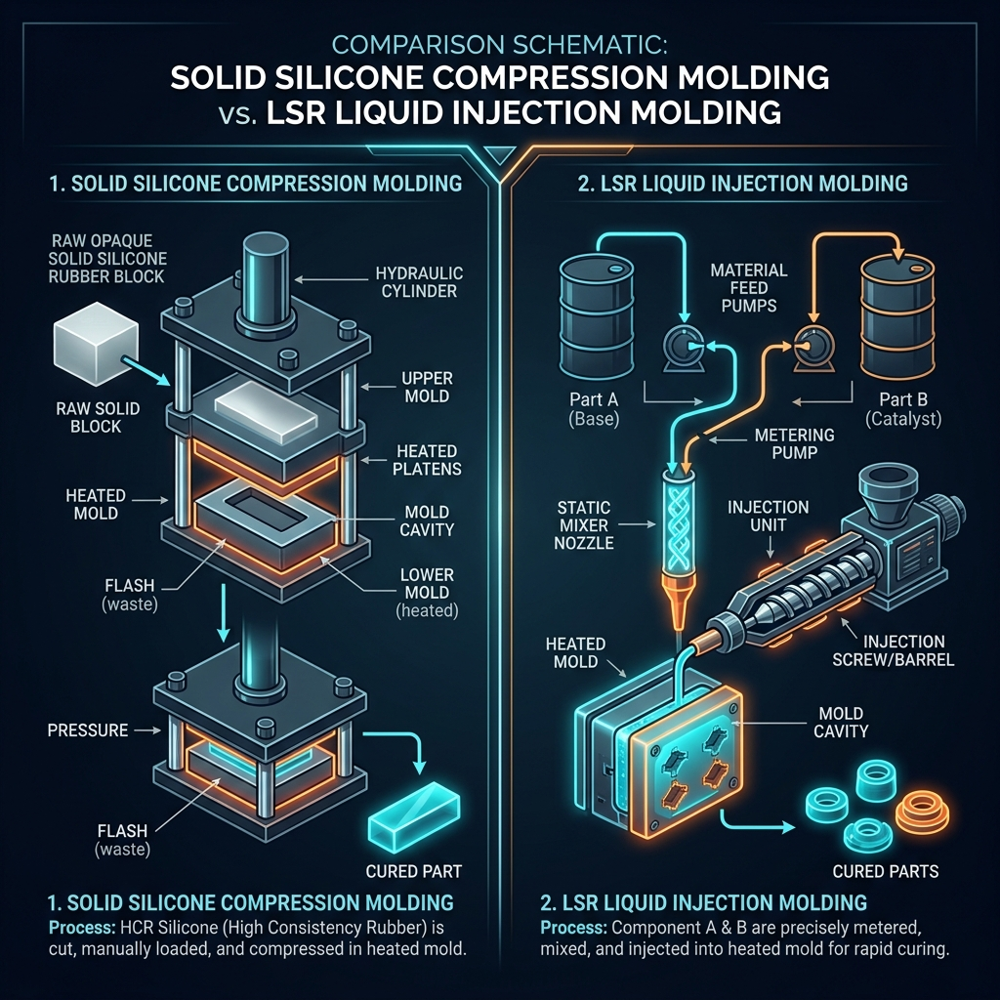

在規劃矽膠成型代工服務時，選擇正確的成型工藝不僅關係到產品品質，更直接決定了模具預算與長期量產成本。以下為您深入分析傳統固態熱壓成型與現代自動化液態矽膠射出的差別：
1. 固態矽膠真空熱壓成型 (Solid Silicone Pressing)
這是歷史悠久、技術成熟的成型方式，使用混煉好的固態矽膠原料（似黏土狀）。
- 生產製程：將原料裁切並秤重後，由人工放置到預熱的鋼模模腔中，透過油壓機閉合施加高溫高壓，使矽膠在模具內硫化熟化。
- 優勢：模具開發難度與精密要求相對較低，模具費用便宜。適合中低批量生產，尤其是尺寸大、結構簡單的矽膠件。
- 劣勢：人工擺料效率受限，毛邊較厚，尺寸公差依模具與成品結構而定。
2. LSR 液態矽膠射出成型 (Liquid Silicone Rubber Injection)
這是適應精密高分子產品需求而生的自動化射出製程，使用雙組份（A劑與B劑）低黏度液態矽膠。
- 生產製程：A/B原料以 1:1 精密比例混合後，經由精密流道系統射入加熱的密閉模腔內，在數秒至數十秒內快速高溫固化。
- 優勢：生產週期極短。流動性極佳，可製造結構複雜、壁厚極薄的微米級零件，尺寸公差精準控制，達到極致精密組裝品質。
- 劣勢：模具設計極度精密，初期造價較高，建議搭配大批量量產以攤提模具折舊成本。

▲ 固態矽膠熱壓與液態矽膠射出 (LSR) 自動化成型工藝對比圖
製程選擇決策表格：
| 評估指標 | 固態矽膠熱壓 | LSR 液態射出 |
|---|---|---|
| 模具費用 | 低至中等（經濟實惠） | 高（技術要求高） |
| 單件加工費 | 中（含手動人工費） | 低 |
| 精密度 / 公差 | 依結構與模具設計而定 | 極致精密級 |
| 適合批量 | 小量至中批量 (1K~20K) | 大批量生產 (>10K 起) |
⚙️ 鈞翔實業提供專業 液態射出代工與 LSR 液態矽膠成型技術服務，歡迎提供圖面進行技術評估與詢價。
需要高品質的矽橡膠客製化服務嗎？
鈞翔實業擁有超過 30 年代工經驗，提供固態熱壓、LSR 液態射出成型以及多種異材結合工藝，符合 ISO 9001 國際認證。